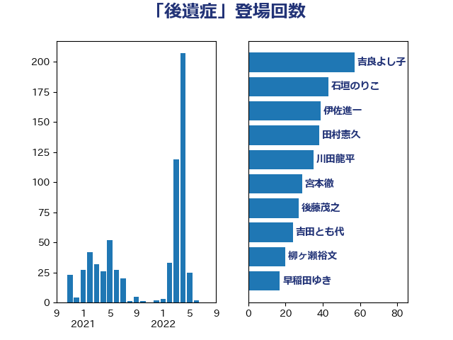

単語「後遺症」

| 吉良よし子 | 日本共産党 | 57 回 |
| 石垣のりこ | 立憲民主党 | 43 回 |
| 伊佐進一 | 公明党 | 39 回 |
| 田村憲久 | 自由民主党 | 38 回 |
| 川田龍平 | 立憲民主党 | 35 回 |
| 宮本徹 | 日本共産党 | 29 回 |
| 後藤茂之 | 自由民主党 | 27 回 |
| 吉田とも代 | 日本維新の会 | 24 回 |
| 柳ヶ瀬裕文 | 日本維新の会 | 20 回 |
| 早稲田ゆき | 立憲民主党 | 17 回 |
| 西村康稔 | 自由民主党 | 11 回 |
| 三浦信祐 | 公明党 | 10 回 |
| 山崎正恭 | 公明党 | 10 回 |
| 串田誠一 | 日本維新の会 | 9 回 |
| 庄子賢一 | 公明党 | 8 回 |
| 梅村聡 | 日本維新の会 | 8 回 |
| 石井苗子 | 日本維新の会 | 8 回 |
| 福島みずほ | 社会民主党 | 8 回 |
| 倉林明子 | 日本共産党 | 7 回 |
| 山本博司 | 公明党 | 7 回 |
| 徳永エリ | 立憲民主党 | 7 回 |
| 柴田巧 | 日本維新の会 | 7 回 |
| 池下卓 | 日本維新の会 | 7 回 |
| 田畑裕明 | 自由民主党 | 7 回 |
| 竹谷とし子 | 公明党 | 7 回 |
| 高木かおり | 日本維新の会 | 7 回 |
| 山田勝彦 | 立憲民主党 | 6 回 |
| 矢倉克夫 | 公明党 | 6 回 |
| 岸田文雄 | 自由民主党 | 5 回 |
| 打越さく良 | 立憲民主党 | 5 回 |
| 阿部知子 | 立憲民主党 | 5 回 |
| 原口一博 | 立憲民主党 | 4 回 |
| 玉木雄一郎 | 国民民主党 | 4 回 |
| 西田実仁 | 公明党 | 4 回 |
| 遠藤敬 | 日本維新の会 | 4 回 |
| 蓮舫 | 立憲民主党 | 3 回 |
| 足立康史 | 日本維新の会 | 3 回 |
| こやり隆史 | 自由民主党 | 2 回 |
| 中島克仁 | 立憲民主党 | 2 回 |
| 井林辰憲 | 自由民主党 | 2 回 |
| 大野泰正 | 自由民主党 | 2 回 |
| 梶山弘志 | 自由民主党 | 2 回 |
| 河野太郎 | 自由民主党 | 2 回 |
| 源馬謙太郎 | 立憲民主党 | 2 回 |
| 高村正大 | 自由民主党 | 2 回 |
| 丸川珠代 | 自由民主党 | 1 回 |
| 仁木博文 | 無所属 | 1 回 |
| 伊東信久 | 日本維新の会 | 1 回 |
| 伊藤孝江 | 公明党 | 1 回 |
| 古賀友一郎 | 自由民主党 | 1 回 |
| 吉田統彦 | 立憲民主党 | 1 回 |
| 嘉田由紀子 | 無所属 | 1 回 |
| 大島敦 | 立憲民主党 | 1 回 |
| 宮口治子 | 立憲民主党 | 1 回 |
| 宮崎政久 | 自由民主党 | 1 回 |
| 山際大志郎 | 自由民主党 | 1 回 |
| 岬麻紀 | 日本維新の会 | 1 回 |
| 枝野幸男 | 立憲民主党 | 1 回 |
| 梅村みずほ | 日本維新の会 | 1 回 |
| 森屋隆 | 立憲民主党 | 1 回 |
| 浜地雅一 | 公明党 | 1 回 |
| 片山さつき | 自由民主党 | 1 回 |
| 礒崎哲史 | 国民民主党 | 1 回 |
| 空本誠喜 | 日本維新の会 | 1 回 |
| 羽生田俊 | 自由民主党 | 1 回 |
| 道下大樹 | 立憲民主党 | 1 回 |
| 鈴木俊一 | 自由民主党 | 1 回 |
| 長妻昭 | 立憲民主党 | 1 回 |
| 青山周平 | 自由民主党 | 1 回 |